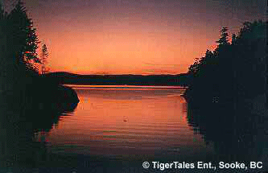
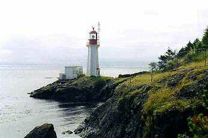
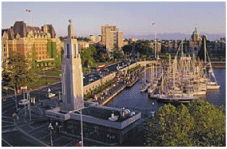
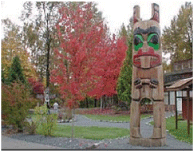
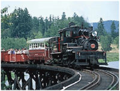

Home
Southern Island
Sooke:
 Sooke has a nice harbour view. It is warm and dry in the summer which makes it a good time to visit.
Victoria:
 Victoria is the capital city of British Columbia. There are many historical places and parks to be visited.
Duncan: